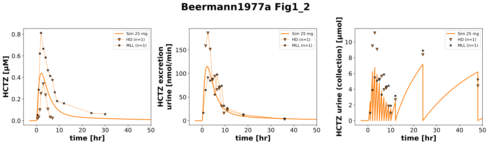
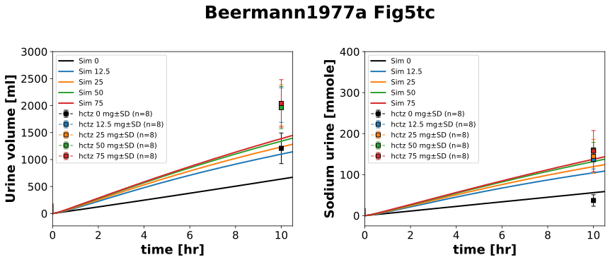
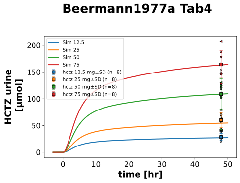

Overview
Models
| model | source |
|---|---|
| model | hctz_body_flat.xml |
Datasets
Figures (3)






Code
"""Simulation experiment of the study Beermann1977a."""
from typing import ClassVar, override
import libsbml
import pandas as pd
from pkpdsim.metadata import (
ApplicationForm,
Coadministration,
Dosing,
Fasting,
Health,
PKPDMappingMetaData,
Route,
Tissue,
)
from sbmlsim import Q
from sbmlsim.data import DataSet
from sbmlsim.fit import FitData, FitMapping
from sbmlsim.plot import Axis, Figure
from sbmlsim.simulation import Change, Simulation
from sbmlsim.units import Quantity
from pkdb_models.models.hctz import MODEL
from pkdb_models.models.hctz.experiments.base_experiment import (
HCTZSimulationExperiment,
)
class Beermann1977a(HCTZSimulationExperiment):
"""Simulation experiment of Beermann1977a.
HCTZ in various single oral doses 12.5, 25, 50 and 75 mg.
"""
colors_dose: ClassVar[dict[float, str]] = {
0: "black",
12.5: "tab:blue",
25: "tab:orange",
50: "tab:green",
75: "tab:red",
}
doses: ClassVar[list[float]] = list(colors_dose)
# Figure 1_2
individuals_fig1_2: ClassVar[list[str]] = ["HD", "MLL"]
#: the urine collections of Fig1 and Fig2 [hr]: every hour from 0 to 10 hr,
#: then 10-12, 12-24 and 24-48 hr (methods). The curated time of a rate is
#: the start of its collection for HD and the end for MLL (the bars of the
#: figure end at the axis at 32 hr, the last collection ends at 48 hr, the
#: sums of the collections are the 48 hr recoveries of Tab4). The point at
#: 32 hr of HD and at 0 hr of MLL are no collections.
collections_fig1_2: ClassVar[dict[str, dict[float, tuple[float, float]]]] = {
"HD": {
**{float(t): (t, t + 1) for t in range(10)},
10.0: (10, 12),
12.0: (12, 24),
24.0: (24, 48),
},
"MLL": {
**{float(t): (t - 1, t) for t in range(1, 11)},
12.0: (10, 12),
24.0: (12, 24),
32.0: (24, 48),
},
}
info_fig1_2: ClassVar[dict[str, str]] = {
"[Cve_hctz]": "hctz25", # plasma concentration
"KI__HCTZEX": "excretion_hctz25", # excretion rate
}
# Figure 5
info_fig5: ClassVar[dict[str, str]] = {
"Vurine": "urinvol", # urine volume
"na_urine": "aurine_na", # cumulative amount of sodium in urine
}
# Table 4
markers_tab4: ClassVar[dict[str, str]] = {
"IJ": "o",
"YO": "D",
"MLL": "*",
"ACL": "x",
"HD": "v",
"KCL": "^",
"AH": ">",
"LE": "<",
}
subjects_tab4: ClassVar[list[str]] = list(markers_tab4)
@override
def datasets(self) -> dict[str, DataSet]:
dsets = {}
for fig_id in ["Fig1_2", "Fig5tc", "Tab4", "Tab4mean"]:
df: pd.DataFrame = self.load_dataframe(fig_id)
for label, df_label in df.groupby("label"):
label = str(label)
if fig_id == "Fig1_2" and label.startswith("excretion_"):
dsets.update(self._collections(label, df_label))
continue
dset = DataSet.from_df(df_label, self.ureg)
if label.startswith(("hctz", "excretion_", "amount")):
dset.unit_conversion("value", 1 / self.Mr.hctz)
dset.unit_conversion("mean", 1 / self.Mr.hctz)
dsets[self.to_sid(f"{fig_id}_{label}")] = dset
return dsets
def _collections(self, label: str, df: pd.DataFrame) -> dict[str, DataSet]:
"""Get the rates of a subject at the midpoints and the amounts collected.
Args:
label: the label of the rates, `excretion_hctz25_<subject>`.
df: the rates of Fig1_2.
Returns:
The rates at the midpoints of the collections and the amounts of the
collections (`_collected`).
"""
collections = self.collections_fig1_2[label.split("_")[-1]]
df = df[df["time"].isin(collections)].sort_values("time")
intervals = [collections[float(t)] for t in df["time"]]
rates = df.copy()
rates["time"] = [(start + end) / 2 for start, end in intervals]
collected = self.collected_amounts(df, intervals)
dsets = {}
for key, data in [(label, rates), (f"{label}_collected", collected)]:
dset = DataSet.from_df(data, self.ureg)
dset.unit_conversion("value", 1 / self.Mr.hctz)
dsets[self.to_sid(f"Fig1_2_{key}")] = dset
return dsets
#: the water load: 150 ml tap water every hour from -2 to 10 hr (at 4, 5
#: and 6 hr 75 ml water and 75 ml Trilgar), after 10 hr the subjects drank
#: at will (methods p297-298). The model has a constant water intake
#: `vin_h2o`, the load is a raised intake over the 12 hr, then the intake
#: of the model again
water_load: ClassVar[tuple[float, float, Quantity]] = (-2, 10, Q(150, "ml/hr"))
@classmethod
def vin_h2o(cls) -> Quantity:
"""Get the water intake of the model, `vin_h2o` of the simulated model."""
model = libsbml.readSBMLFromFile(str(MODEL.model_path)).getModel()
return Q(model.getParameter("vin_h2o").getValue(), "l/min")
def _protocol(self, dose: float) -> list[Change]:
"""Get the changes of the protocol: the water load and the dose at 0 hr.
The intake `vin_h2o` is changed after the initialization, so the
excretion of water of the model (`k_h2o`, initialized from `vin_h2o`)
stays that of its own intake and the load is excreted as the
extracellular fluid expands. The urine is emptied at the dose, the
collections start at 0 hr. The sodium intake of the study (6.75 mmol
in 10 hr, Table 1) is not encoded: the intake of the model, `k_na *
na_ref`, is the excretion constant `k_na` of the fit times the
reference sodium, no parameter of its own.
"""
start, end, rate = self.water_load
return [
Change(start, {"vin_h2o": rate}),
Change(end, {"vin_h2o": self.vin_h2o()}),
Change(0, {"PODOSE_hctz": Q(dose, "mg"), **self.urine_reset}),
]
@override
def simulations(self) -> dict[str, Simulation]:
simulations = {}
# the simulations start 1 hr before the water load
start = self.water_load[0] - 1
for dose in self.doses:
simulations[self.to_sid(f"hctz{dose}")] = Simulation(
time_unit="hr",
start=start,
end=50,
preinit_changes=self.default_changes(),
changes=self._protocol(dose),
)
# the urine of Fig1_2 emptied at the end of every collection
ends = sorted({end for _, end in self.collections_fig1_2["HD"].values()})
simulations["hctz25_collections"] = Simulation(
time_unit="hr",
start=start,
end=50,
preinit_changes=self.default_changes(),
changes=[*self._protocol(25), Change(ends, self.urine_reset)],
)
return simulations
@override
def fit_mappings(self) -> dict[str, FitMapping]:
mappings = {}
# Figure 1_2: the plasma and the amounts of the urine collections
for sid in self.info_fig1_2:
name = self.info_fig1_2[sid]
excretion = sid == "KI__HCTZEX"
for individual in self.individuals_fig1_2:
mappings[self.to_sid(f"fm_Fig1_2_{name}_{individual}")] = FitMapping(
self,
reference=FitData(
self,
dataset=self.to_sid(
f"Fig1_2_{name}_{individual}"
+ ("_collected" if excretion else "")
),
xid="time",
yid="value",
count="count",
),
observable=FitData(
self,
task="task_hctz25_collections" if excretion else "task_hctz25",
xid="time",
yid="Aurine_hctz" if excretion else sid,
),
metadata=PKPDMappingMetaData(
tissue=Tissue.URINE if "excretion" in name else Tissue.PLASMA,
application_form=ApplicationForm.TABLET,
route=Route.PO,
dosing=Dosing.SINGLE,
health=Health.HEALTHY,
fasting=Fasting.FASTED,
coadministration=Coadministration.NONE,
),
)
# Figure 5
for dose in self.doses:
dose_str = str(dose).replace(".", "_")
for sid in self.info_fig5:
name = self.info_fig5[sid]
mappings[self.to_sid(f"fm_Fig5tc_{dose_str}_{name}")] = FitMapping(
self,
reference=FitData(
self,
dataset=self.to_sid(f"Fig5tc_{dose_str}_{name}"),
xid="time",
yid="mean",
yid_sd="mean_sd",
count="count",
),
observable=FitData(
self, task=self.to_sid(f"task_hctz{dose}"), xid="time", yid=sid
),
metadata=PKPDMappingMetaData(
tissue=Tissue.URINE,
application_form=ApplicationForm.TABLET,
route=Route.PO,
dosing=Dosing.SINGLE,
health=Health.HEALTHY,
fasting=Fasting.FASTED,
coadministration=Coadministration.NONE,
),
)
# Table 4
for dose in self.doses:
dose_str = str(dose).replace(".", "_")
if dose == 0:
continue
# data (mean)
mappings[self.to_sid(f"fm_Tab4_amount_HCTZ{dose}_mean")] = FitMapping(
self,
reference=FitData(
self,
dataset=self.to_sid(f"Tab4_amount_HCTZ{dose_str}_mean"),
xid="time",
yid="mean",
yid_sd="mean_sd",
count="count",
),
observable=FitData(
self,
task=self.to_sid(f"task_hctz{dose}"),
xid="time",
yid="Aurine_hctz",
),
metadata=PKPDMappingMetaData(
tissue=Tissue.URINE,
application_form=ApplicationForm.TABLET,
route=Route.PO,
dosing=Dosing.SINGLE,
health=Health.HEALTHY,
fasting=Fasting.FASTED,
coadministration=Coadministration.NONE,
),
)
# data (individual)
for subject in self.subjects_tab4:
# HD and AH missing in 12.5 mg
if dose == 12.5 and subject in {"HD", "AH"}:
continue
mappings[self.to_sid(f"fm_Tab4_amount_HCTZ{dose}_{subject}")] = (
FitMapping(
self,
reference=FitData(
self,
dataset=self.to_sid(
f"Tab4_amount_HCTZ{dose_str}_{subject}"
),
xid="time",
yid="value",
yid_sd=None,
count="count",
),
observable=FitData(
self,
task=self.to_sid(f"task_hctz{dose}"),
xid="time",
yid="Aurine_hctz",
),
metadata=PKPDMappingMetaData(
tissue=Tissue.URINE,
application_form=ApplicationForm.TABLET,
route=Route.PO,
dosing=Dosing.SINGLE,
health=Health.HEALTHY,
fasting=Fasting.FASTED,
coadministration=Coadministration.NONE,
),
)
)
return mappings
@override
def figures(self) -> dict[str, Figure]:
return {
**self._figure_Fig1_2(),
**self._figure_Fig5tc(),
**self._figure_Tab4(),
}
def _figure_Fig1_2(self) -> dict[str, Figure]:
name = "Fig1_2"
fig = Figure(
experiment=self,
sid=self.to_sid(name),
num_rows=1,
num_cols=3,
name=f"{self.__class__.__name__} {name}",
)
plots = fig.create_plots(
xaxis=Axis(self.label_time, unit="hr", max=50), legend=True
)
plots[0].set_yaxis(self.label_hctz, unit=self.unit_hctz)
plots[1].set_yaxis(
self.label_hctz_excretion_urine, unit=self.unit_hctz_excretion_urine
)
plots[2].set_yaxis(
f"{self.label_hctz_urine.strip()} (collection)", unit=self.unit_hctz_urine
)
# simulation
for k, (task, sid) in enumerate(
[
("task_hctz25", "[Cve_hctz]"),
("task_hctz25", "KI__HCTZEX"),
("task_hctz25_collections", "Aurine_hctz"),
]
):
plots[k].add_data(
task=task,
xid="time",
yid=sid,
label="Sim 25 mg",
color=self.colors_dose[25],
)
# data: the plasma, the rates at the midpoints and the amounts of the
# collections at their ends
for k, (label, suffix) in enumerate(
[
("hctz25", ""),
("excretion_hctz25", ""),
("excretion_hctz25", "_collected"),
]
):
for individual in self.individuals_fig1_2:
plots[k].add_data(
dataset=self.to_sid(f"Fig1_2_{label}_{individual}{suffix}"),
xid="time",
yid="value",
yid_sd=None,
count="count",
label=individual,
marker="v" if "HD" in individual else "*",
color=self.colors_dose[25],
linestyle="" if suffix else "--",
)
return {
self.to_sid(name): fig,
}
def _figure_Fig5tc(self) -> dict[str, Figure]:
name = "Fig5tc"
fig = Figure(
experiment=self,
sid=self.to_sid(name),
num_rows=1,
num_cols=2,
name=f"{self.__class__.__name__} {name}",
)
plots = fig.create_plots(
xaxis=Axis(self.label_time, unit=self.unit_time, min=0, max=10.5),
legend=True,
)
plots[0].set_yaxis(
label=self.label_urine_volume, unit=self.unit_urine_volume, max=3000
)
plots[1].set_yaxis(label=self.label_na_urine, unit=self.unit_na_urine, max=400)
for dose in self.doses:
for k, sid in enumerate(self.info_fig5):
label = self.info_fig5[sid]
# simulation
plots[k].add_data(
task=self.to_sid(f"task_hctz{dose}"),
xid="time",
yid=sid,
label=f"Sim {dose}",
color=self.colors_dose[dose],
)
# data
plots[k].add_data(
dataset=self.to_sid(
f"Fig5tc_{str(dose).replace('.', '_')}_{label}"
),
xid="time",
yid="mean",
yid_sd="mean_sd",
count="count",
label=f"hctz {dose} mg",
color=self.colors_dose[dose],
)
return {
self.to_sid(name): fig,
}
def _figure_Tab4(self) -> dict[str, Figure]:
name = "Tab4"
fig = Figure(
experiment=self,
sid=self.to_sid(name),
name=f"{self.__class__.__name__} {name}",
)
plots = fig.create_plots(xaxis=Axis(self.label_time, unit="hr"), legend=True)
plots[0].set_yaxis(self.label_hctz_urine, unit=self.unit_hctz_urine)
for dose in self.doses:
dose_str = str(dose).replace(".", "_")
if dose == 0:
continue
# simulation
plots[0].add_data(
task=self.to_sid(f"task_hctz{dose}"),
xid="time",
yid="Aurine_hctz",
label=f"Sim {dose}",
color=self.colors_dose[dose],
)
# data (individual)
for subject in self.subjects_tab4:
# HD and AH missing in 12.5 mg
if dose == 12.5 and subject in {"HD", "AH"}:
continue
plots[0].add_data(
dataset=self.to_sid(f"Tab4_amount_HCTZ{dose_str}_{subject}"),
xid="time",
yid="value",
yid_sd=None,
count="count",
label=None,
linestyle="",
marker=self.markers_tab4[subject],
color=self.colors_dose[dose],
markersize=4,
)
# data (mean)
plots[0].add_data(
dataset=self.to_sid(f"Tab4_amount_HCTZ{dose_str}_mean"),
xid="time",
yid="mean",
yid_sd="mean_sd",
count="count",
label=f"hctz {dose} mg",
marker="s",
linestyle="",
color=self.colors_dose[dose],
)
return {
self.to_sid(name): fig,
}
if __name__ == "__main__":
MODEL.run_experiments(Beermann1977a, output_dir=Beermann1977a.__name__)